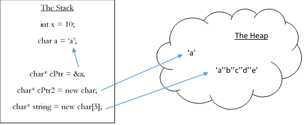

The Stack vs. the Heap
So far, all the variables you've used are stored in the stack, the default storage area for program data. The stack is extremely small compared to main memory, and won’t allow you to hold very much data. In fact, if you use too much of it, your program will crash from "stack overflow."
Through dynamic memory allocation, you can take advantage of the heap, which is a much, much larger portion of your computer’s memory. The heap can store about as much data as there is available memory in your computer. (Again, how your operating system manages memory between the software and hardware layers is somewhat more complicated.) You can’t directly store values in the heap. Instead, you access it through pointers, as seen in the diagram below.
Dynamic Memory
As suggested by the diagram, you allocate dynamic memory (in C++) using the reserved keyword "new." "New" basically looks through your computer’s memory for a place with enough space to hold whatever amount data you specify, specifies that your program is using it, and finally returns a pointer to that memory. This is called memory allocation. To denote the amount of memory you want to allocate, you specify a data type after the keyword new. This type tells "new" how many bytes of memory it needs to allocate, as well as what kind of pointer to return.
Assuming your computer has not run out of memory, you will always get back a valid pointer. The pointer is your only point of access to your newly allocated memory—there is no statically allocated (i.e. on the stack) variable that contains the "original" value. Remember that while the allocated memory is valid, its actual value will be garbage.
int* dynamInt = new int;
This allocates an integer on the heap, which dynamInt points to.
char* dynamChar = new char;
This allocates a character on the heap, which dynamChar points to.
If you could only allocate single values, the heap wouldn’t be particularly useful (until later). However, you can use "new" to allocate an array by adding brackets after the data type. This allocation will give you a pointer to the first element of the array. Remember how pointers can work in almost exactly the same way as arrays? This is why that is so useful—your pointer is the array, you have no other way to access the memory. Hence, it is particularly important to keep in mind how you move the pointer around. For example, if you iterate through the array by moving your pointer, you must have some way to get back to the beginning, for reasons discussed in the next section.
char* dynamString = new char[50];
This allocates a c-string of length 50 (50 chars) on the heap, which dynamString points to.
Memory Leaks
If you were to move a pointer to dynamic memory elsewhere, you would have no way of getting back to the memory. If you do this, the memory doesn’t simply go away—it’s still out there, taking up space, but you have no way to get to it. This is called a memory leak, and is a bug. Memory leaks are especially bad if you are leaking memory in a loop, as the amount of memory leaked goes up and up until either your program is shut down or your computer runs out of memory and kills the program.
In order to not leak memory, you must always be wary of how you are manipulating pointers, as not to lose access to any dynamic memory. One of the most common sources of leakage is to allocate in a function, but never delete. Because the pointer to the memory only exists within a function, the pointer will be deleted when the function ends, and the memory will be lost. If the function is called again, it will create more memory and lose that, and on and on.
However, there is a solution! Always delete your memory before you lose access to it. To delete dynamically allocated memory, use the keyword "delete." "Delete" deallocates the memory at an address, releasing it back to the operating system and making it available to the rest of your computer. However, there are several caveats you must keep in mind when deleting memory.
First, if you call delete on a pointer that does not point to dynamic memory, you will get a segmentation fault.
Second, once you delete memory from a pointer, nothing changes about the pointer itself—but now it will be pointing to some random place in memory and will also cause a segmentation fault if you use it. As the pointer is now invalid, you should always set the pointer to "NULL" (or zero) after you delete it. Again, this is useful because you can later test if a pointer is valid or not by checking that it is not NULL.
Third, to delete dynamically allocated arrays, you must add empty brackets onto the end of the delete keyword (“delete[]”). The pointer to delete must be pointing at the first element of the array, or else your program will only delete a portion of the memory. The part not deleted is leaked.
void func() {
char* dynamStr = new char[50];
// Do processing
// Without this line, the string memory would be leaked
delete[] dynamStr;
// This is not necessary, as the pointer will be gone when the function ends, but is a good habit to get into
dynamStr = NULL;
}
In this example, a 50 character array is dynamically allocated at the start of a function. As the pointer will be deleted, inaccessible, when the function ends, this memory must be deleted within the same function.
C-Strings
You may be wondering why this is lesson called “dynamic” memory, as there doesn't seem to be anything "dynamic" about it.
Unlike arrays, in which you must specify a constant size for them at compile time, dynamic memory can be allocated in arbitrary, variable sizes. This means that you can make arrays of any specified size at runtime. For example, you could ask the user how many values they want to create, and create exactly that many, rather than having to allocate an array of a maximum size and wasting a ton of memory.
Another example is creating exactly sized c-strings—only allocating the exact number of characters necessary. If you’re inputting a c-string from the user, you don’t know beforehand how many characters you will receive, so you still have to first input the text into a statically allocated, maximum sized "buffer." Then, create and copy the data to an exactly sized dynamic c-string.
This process requires a string length function, which takes a character pointer (to a string) and returns the length of the string. It is conventional that the length should not include the null terminator. You also need a string copy function which copies each character from one c-string to another.
cout << “How many numbers will you input: “; cin >> numVals; int* values = new int[numVals]; for(int i = 0; i < numVals; i++) cin >> values[i];
In this example, we prompt the user to specify how many numbers to input, allocating a perfectly sized array.
cout << “Enter a word: “; cin >> buffer; char* exactStr = new char[strlen(buffer) + 1]; strcpy(exactStr,buffer); cout << “Exactly sized word: “ << exactStr << endl;
In this example, we input a string into a buffer and create an exactly sized string based on the input length.
Functions
I said you must always remember to delete your memory before the end of a function. That’s not strictly true. The golden rule of preventing memory leaks is to simply to delete your memory before you lose access to it. Not everything in a function is necessarily lost when it ends.
I’m speaking, of course, of returned values and reference parameters. A function can return a pointer to dynamic memory just like any other pointer. In which case it does not make sense to delete the memory within the function, as then the returned value would be useless. Reference parameters—pointers passed by reference—can work the same way. For example, if you set a reference parameter to point to newly allocated dynamic memory, it can still be accessed elsewhere. Chances are, the memory should not be deleted within the function.
Again, always be wary of invalidating your pointers. For example, if a pointer to dynamic memory is passed to a function, that function can globally delete the memory, and if the function does not globally set the pointer to some other location, the pointer may no longer be valid, and you might end up with a segmentation fault. In this situation, the pointer must be passed by reference, as its value must be updated in the calling function as well as called function.
char* allocateString(int size) {
char* str = new char[size];
return str;
}
Here, memory should not be deallocated within the function, as it is returned, preserving a way to access it. It should be deleted elsewhere, when it is no longer needed.
void resizeStr(char*& dest, int size) {
delete[] dest;
dest = new char[size];
}
This function will delete the memory pointed to by "dest" and reallocate it with a new size. It should not be deleted because, as "dest" is a reference parameter, the actual parameter will be pointing to the new memory in main, and can be deleted later. Note that if "dest" was not a reference parameter, this function would leak memory. The reference allows the newly found address to be passed back to the calling function.
Multidimensional Arrays
As seen in lesson 10, statically and dynamically allocated multidimensional arrays are structured in fundamentally different ways. In dynamically allocated multidimensional array, each dimension is represented by a layer of pointers to arrays. For a 2D array, the first level is a dynamically array of pointers, which all point into the second level; the actual arrays of integers. In this design, only arrays at the "bottom" dimension are actually stored as values.
Before we get into actually allocating and deleting these structures, let's talk about accessing them.
In statically allocated multidimensional arrays, to find a value your program must find a linear offset based on the indices of your value. This depends on the size of your dimensions. For example, to find the linear offset for position [1][2][3] within a 3x3x3 array, we take 3 spaces from the 3rd index, 2 times the size of the third dimension from the second index, and 1 times the size of the second times the size of the third dimension from the first index. This gives us 3 + 2*3 + 1*3*3, or 18. Hence, the item at [1][2][3] is actually at [18] from a linear perspective.
| 0 | 1 | 2 | |
| 0 | array[0][0] | array[1][0] | array[2][0] |
| 1 | array[0][1] | array[1][1] | array[2][1] |
| 2 | array[0][2] | array[1][2] | array[2][2] |
| array[0][0] | array[0][1] | array[0][2] | array[1][0] | array[1][1] | array[1][2] | array[2][0] | array[2][1] | array[2][2] |
Here, you can see how the 2D indices translate into 1D ones. For example, [1][2] maps to [5] (2 + 1*3).
In dynamically allocated multidimensional arrays, this process is rather more straightforward. Instead of deducing a linear offset from the specified indices, your program simply chains offset operators together. For example, in a 2D array, the first operator retrieves a pointer from the top-level array and the second operator retrieves a piece of data from the second-level array.

Unfortunately, allocating multidimensional arrays is not as simple as adding more brackets to the "new" operator. That said, it's still pretty simple; you just have to build out the layers of pointers yourself. For example, to allocate a 2D array, you would first allocate an array of pointers to a double pointer (representing the top dimension), then loop through each top-level element, allocating a second-level array for each. For a 3D array, this second level would again be full of pointers which then point to the final dimension.
int** 2Darr; 2Darr = new int*[10]; for(int i = 0; i < 10; i++) 2Darr[i] = new int[10];
Here we dynamically allocate a 10x10 array. Note that when we do the first allocation (int*[10]), we are creating a dynamic array of integer pointers. The return from this "new" will be a double integer pointer.
Given the allocation, deletion is just as you'd expect. Start by deleting the "lowest" dimension and work your way up.
for(int i = 0; i < 10; i++) delete[] 2Darr[i]; delete[] 2Darr; 2Darr = NULL;
Here we delete all allocated memory. Note that brackets are used with "delete" in both statements. Each element in 2Darr is a pointer to an array, so each must be deleted likewise. The final deletion deletes the top level array of integer pointers. Finally, remember to set deleted pointers to NULL.